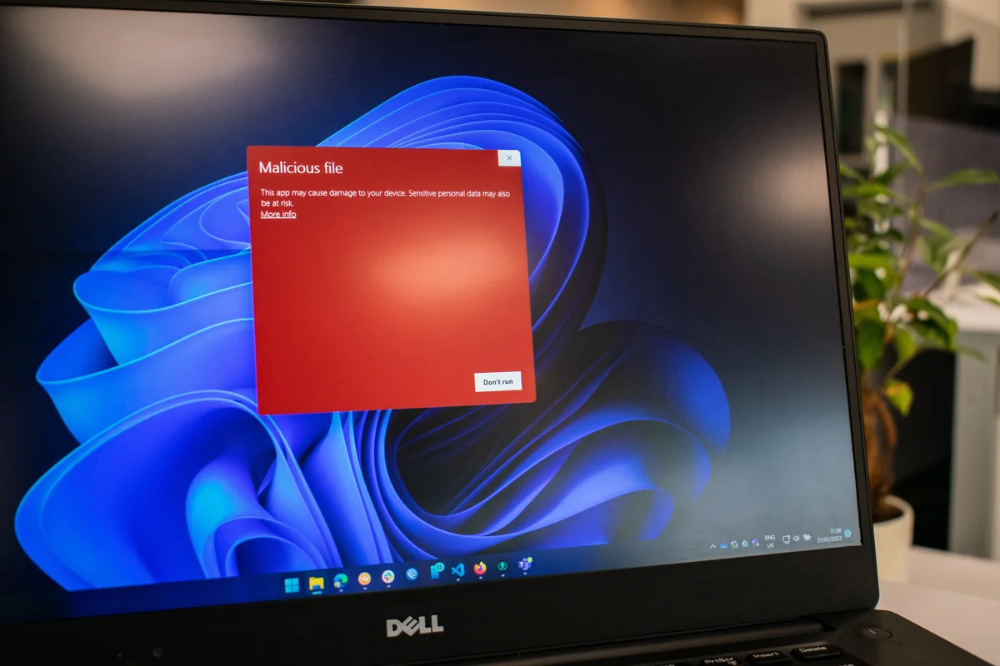

At RSA Conference 2023, CrowdStrike demonstrated an effective technique that a cybercrime group used in the wild to steal credentials and bypass MFA in Microsoft 365.
CrowdStrike observed a recent attack technique that used a simple but effective MFA bypass along with vishing to steal sensitive data from large enterprises.
In CrowdStrike's annual "Hacking Exposed" session at RSA Conference 2023, co-founder and CEO George Kurtz and President Michael Sentonas presented a case study of a real-world attack technique that a cybercrime group used to exfiltrate and ransom sensitive data. Kurtz said the adversary using the technique is a cybercrime group that, like some ransomware gangs, has forgone the actual encryption of systems and instead steals sensitive data and extorts victims. The group has targeted organizations in the telecommunications and business process outsourcing industries.
"What we've seen is, people have gotten better at ransomware detection/prevention and also at backing up data, so what we've seen now is [threat actors saying], 'Let's just skip encrypting all your data and exfil the data and extort you,'" Kurtz said.
Sentonas said the threat group behind the attack was small but "incredibly active," and the new attack technique, which begins with credential theft and bypassing multifactor authentication (MFA) protection, was just a few weeks old.
Kurtz said the adversary used familiar tactics in its attack, such as registering domains similar to the target organization's MFA provider to create convincing phishing links. But the adversary also used vishing calls in which they imitated help desk workers and spent up to one hour on the phone with targeted employees.
CrowdStrike CEO George Kurtz demonstrates how a threat group used a well-executed vishing call to gain Microsoft 365 credentials and bypass MFA protections.
The adversary also demonstrated strong knowledge of the target organization's environment, walking the victims through what seemed like a legitimate IT support call, but instead was a ruse to direct them to a fake login portal. "They do a lot of reconnaissance on the company. They know the people, they know the systems, and they're very, very persistent," Kurtz said. "And they speak pretty good English."
Once the victim enters credentials into the fake login portal, the adversary is able to approve MFA push notifications for Azure access. To avoid detection, the attackers install legitimate remote access tools, such as AnyDesk, rather than malware. Then they create accounts in Azure Active Directory, adding some to privileged groups to maintain persistent access. Once they've moved through the environment and exfiltrated sensitive data, they exit the network and leave a ransom note.
But a key point in the attack chain involves an MFA bypass that begins with a vishing call. "We are big fans of MFA -- you should have it," Kurtz said, "but there are definitely ways that MFA can be abused."
During the demonstration, Kurtz received a phone call that was a replica of the vishing call used in the real-world attack.
"Hi, it's Mark calling from security operations," the voice said. "Sorry to bother you, but we believe your account has been compromised and we need to validate your username and password. In a few seconds, we'll send a notification to your phone. Please click it and follow the on-screen prompts. The password should only be entered on the mobile device that is registered with the company. And remember, if you ever receive a phone call asking for your password, please hang up immediately and call the company support number."
What the targeted employees didn't know was that the push notification and login portal were from the adversary's machine. It was running Tails, a Linux-based anti-surveillance operating system, and Evilginx2, an open source penetration testing tool that uses a man-in-the-middle framework to harvest credentials.
The attack chain used by the cybercrime group starts with a vishing call and ends with attackers exfiltrating sensitive data and extorting the victim organization.
"It's not complex," Sentonas said. "After somebody has profiled the user long enough, and established a rapport and established comfort, they'll do the phone call, and they'll get somebody to go to a particular website."
Once a victim enters a username, password and MFA credentials into the portal, the adversary uses Evilginx2 to also capture the session token.
"What's really good and really scary about this is you can go online to Microsoft.com, get a cookie browser extension that you can put into Chrome, insert the session token -- this is freely available, anybody here can grab hold of this -- and replay the cookie," Sentonas said.
CrowdStrike's demonstration showed how once the cookie was replayed in the Chrome browser, the attacker had access to the victim's Microsoft 365 account. Once the adversary gained control of an account, the attacker would download a Microsoft authenticator app and set up MFA on a burner phone to maintain persistent access inside the environment.
From there, the attackers used AnyDesk to gain remote access to victims' machines to collect additional data and determine what access and privileges that employee had inside the organization. Once the adversary group has control of both a user's Microsoft 365 and physical device, it's pretty much game over, Sentonas said.
"We've seen some of the largest organizations in the world fall victim to this particular attack every week for the last quarter or two." Michael Sentonas, President, CrowdStrike
Kurtz said that because the attack technique relies on legitimate remote access programs and command-line tools, it's important for organizations to collect as much telemetry as they can to piece together "weak signals" that seem innocuous but instead are indications of malicious activity.
Sentonas also encouraged organizations to routinely review their identity stores such as Active Directory to see what new accounts have been added and if there have been any suspicious modifications. And while the attack technique features an effective bypass, he encouraged the audience to adopt MFA throughout their organizations and to use strong, phishing-resistant methods such as the FIDO2 standard.